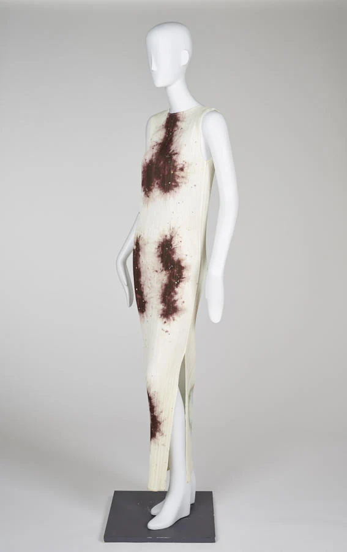

Issey Miyake
Issey Miyake Gunpowder Dress
₱48,000
A white sleeveless dress with dark, scattered marks across its long silhouette.
Why it’s here: The documented Cai Guo-Qiang collaboration brings an artist’s mark-making into clothing.
Back to collection